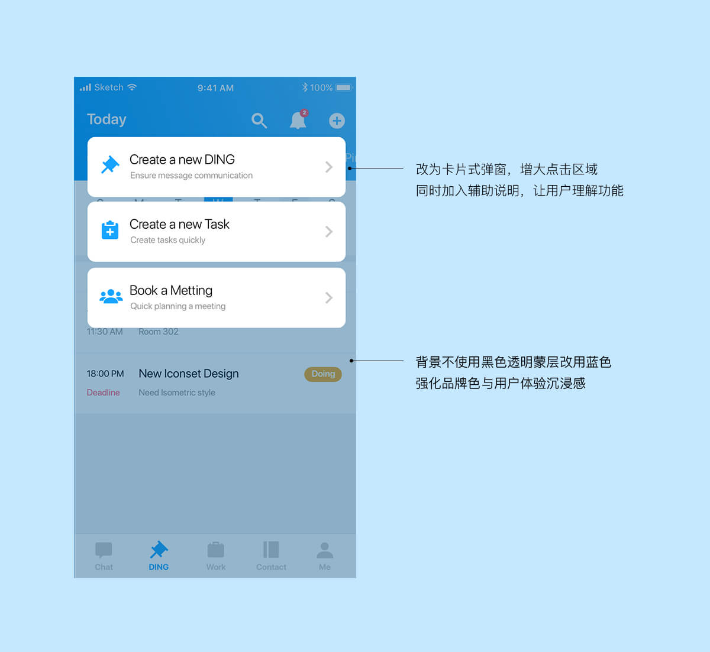

DING CONCEPT REDESIGN
OVERVIEW
ICON REDESIGN
RESEARCH PROBLEM
1.一些年轻用户表示App设计感不足，虽然整体简洁干净，但对于普通用户来说，过度的简洁（纯白色系）看上去有些简单，再比如聊天界面的气泡太过死板等。
2.在小范围调研中，我发现基本所有用户最常用的功能只有几个，集中在打卡和审批，但它们的位置却比较隐藏。
3.任务界面的设计，只有完成与否的选项，而在我们日常工作中，会有还未开始、正在做、已经完成三个选项（甚至还有审核、测试中），更细致的工作进程选项可以帮助工作便捷合理的进行安排。
4.当前有些入口的触摸区域明显小于科学适宜的面积，比如增加新的DING、任务和会议等。
5.在增加新的DING时，选择悄悄话模式后，输入框变成半透明背景，略显粗糙。
UI REDESIGN
